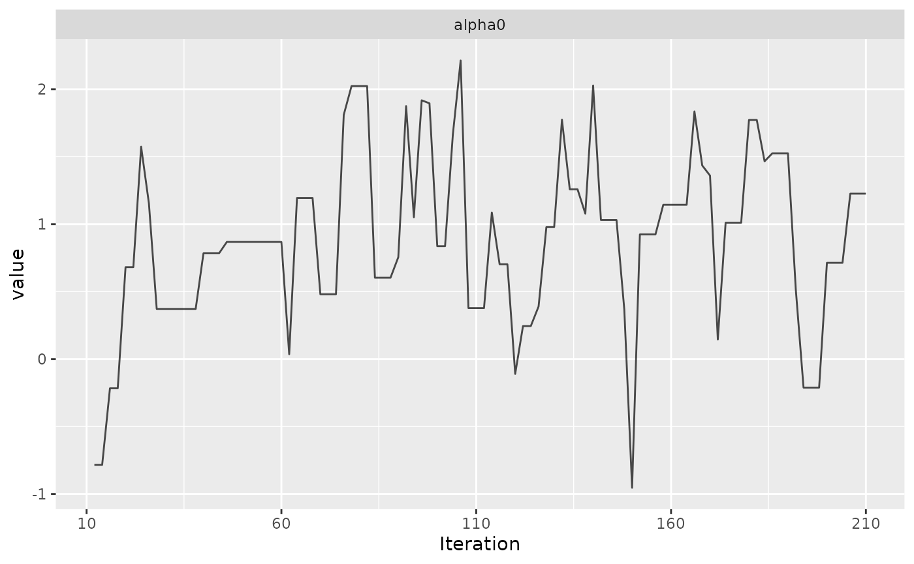
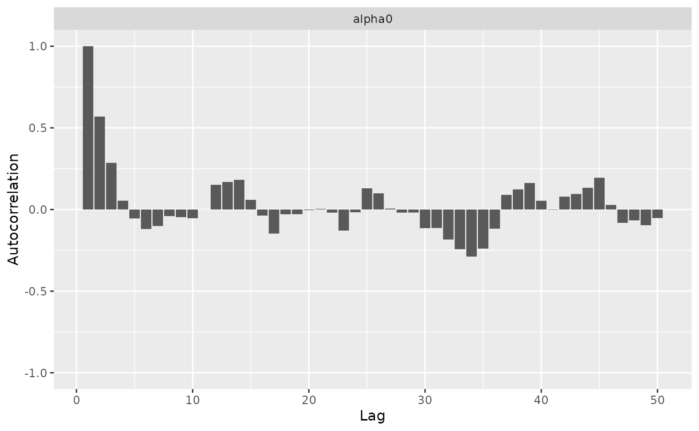
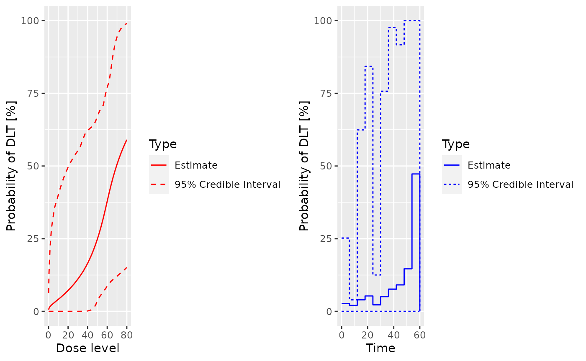
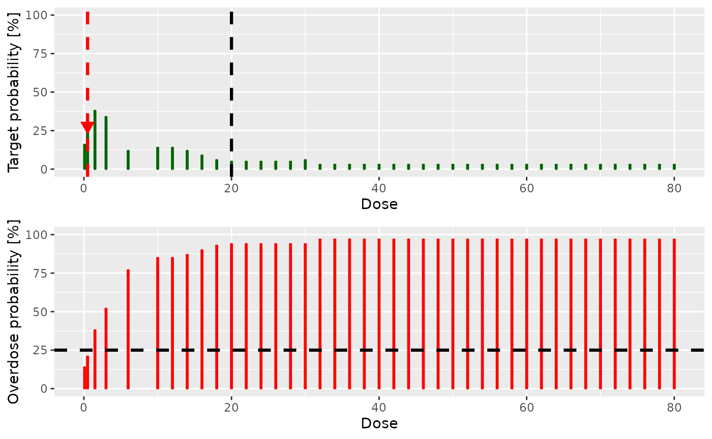
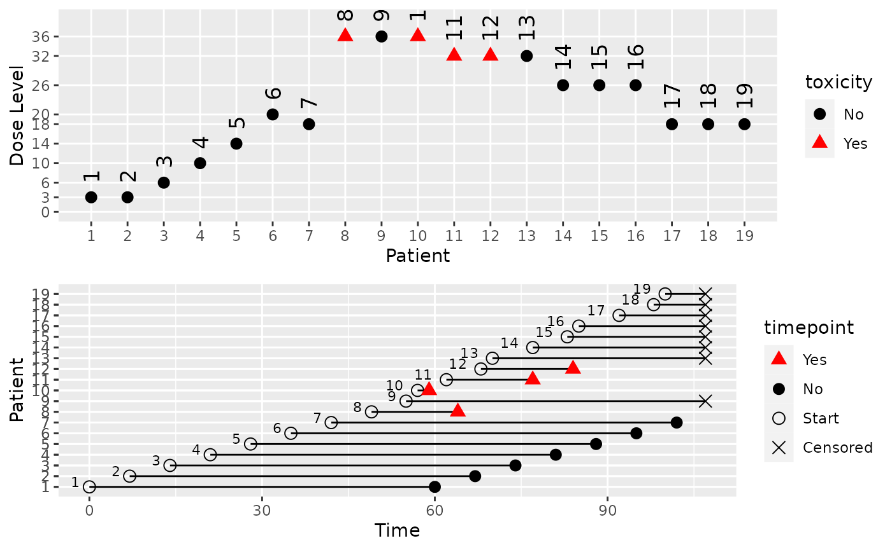

Rolling CRM Example
Jiawen Zhu, Daniel Sabanes Bove
02 January 2019
Source:vignettes/rolling-crm.Rmd
rolling-crm.RmdExample 1: Recommend a dose for the next cohort
Setting up the data
## Loading required package: ggplot2## Registered S3 method overwritten by 'crmPack':
## method from
## print.gtable gtable## Type crmPackHelp() to open help browser
## Type crmPackExample() to open example
data <- DataDA(x=c(0.1, 0.5, 1.5, 3, 6, 10, 10, 10),
y=c(0, 0, 1, 1, 0, 0, 1, 0),
doseGrid=
c(0.1, 0.5, 1.5, 3, 6,
seq(from=10, to=80, by=2)),
u=c(42,30,15,5,20,25,30,60),
t0=rep(0, 8),
Tmax=60)## Used default patient IDs!## Used best guess cohort indices!Structure of the model class
npiece_=10
Tmax_=60
lambda_prior<-function(k){
npiece_/(Tmax_*(npiece_-k+0.5))
}
model<-DALogisticLogNormal(mean=c(-0.85,1),
cov=matrix(c(1,-0.5,-0.5,1),nrow=2),
refDose=56,
npiece=npiece_,
l=as.numeric(t(apply(as.matrix(c(1:npiece_),1,npiece_),2,lambda_prior))),
C_par=2)Obtain the posterior
options <- McmcOptions(burnin=10,
step=2,
samples=1e2)
set.seed(94)
samples <- mcmc(data, model, options)Use ggmcmc to diagnose
## Loading required package: dplyr##
## Attaching package: 'dplyr'## The following objects are masked from 'package:stats':
##
## filter, lag## The following objects are masked from 'package:base':
##
## intersect, setdiff, setequal, union## Loading required package: tidyr## Registered S3 method overwritten by 'GGally':
## method from
## +.gg ggplot2
alpha0samples <- get(samples,"alpha0")
print(ggs_traceplot(alpha0samples))
print(ggs_autocorrelation(alpha0samples))
prior mean curve
emptydata <- DataDA(doseGrid=c(0.1, 0.5, 1.5, 3, 6,
seq(from=10, to=80, by=2)),Tmax=60)
Priorsamples <- mcmc(emptydata, model, options)
plot(Priorsamples, model,emptydata,hazard=FALSE)
Escalation rules
Need to fill in (use the same rule in the section 8 of “using the package crmPack: introductory examples”)
myIncrements <- IncrementsRelative(intervals=c(0,20),
increments=c(1,0.33))
nextMaxDose <- maxDose(myIncrements,data=data)
myNextBest <- NextBestNCRM(target=c(0.2,0.35),
overdose=c(0.35,1),
maxOverdoseProb=0.25)
mySize1 <- CohortSizeRange(intervals=c(0, 30),
cohortSize=c(1, 3))
mySize2 <- CohortSizeDLT(DLTintervals=c(0, 1),
cohortSize=c(1, 3))
mySize <- maxSize(mySize1, mySize2)
myStopping1 <- StoppingTargetProb(target=c(0.2, 0.35),
prob=0.5)
myStopping2 <- StoppingMinPatients(nPatients=50)
myStopping <- (myStopping1 | myStopping2)Recommended dose for the next cohort
doseRecommendation <- nextBest(myNextBest,
doselimit=nextMaxDose,
samples=samples,
model=model,
data=data)
doseRecommendation$plot
doseRecommendation$value## [1] 0.5Example 2: Run a simulation to evaluate operating characteristics
Set up safety window and DADesign to be completed
mysafetywindow <- SafetyWindowConst(c(6,2),7,7)
design <- DADesign(model=model,
increments=myIncrements,
nextBest=myNextBest,
stopping=myStopping,
cohortSize=mySize,
data=emptydata,
safetyWindow=mysafetywindow,
startingDose=3)Set up true curves
myTruth<-function(dose){
model@prob(dose,alpha0=2,alpha1=3)
}
curve(myTruth(x), from=0, to=100, ylim=c(0, 1))
Perform the simulations
mySims <- simulate(design,
args=NULL,
truthTox=myTruth,
truthSurv=exp_cond.cdf,#piece_exp_cond.cdf,
trueTmax=80,
nsim=2,
seed=819,
mcmcOptions=options,
firstSeparate=TRUE,
deescalate=FALSE,
parallel=FALSE)Interpret the simulation results
Use a similar way as section 9.2 in the “using the package crmPack: introductory examples” document

mySims@stopReasons[[2]]## [[1]]
## [1] "Probability for target toxicity is 76 % for dose 26 and thus above the required 50 %"
##
## [[2]]
## [1] "Number of patients is 18 and thus below the prespecified minimum number 50"